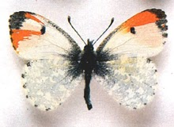

A nappali lepke jellemzõi |
|  nappali lepkék felismerhetõk arról, hogy napközben aktívak, általában élénk színûek, csápjuk bunkós, és nyugalomban a szárnyukat hátuk fölött összecsukva tartják. |
nappali lepkék hátsó szárnyának töve kiszélesedõ, megerõsített, és repülés közben alátámasztja az elülsõ szárnyat. |